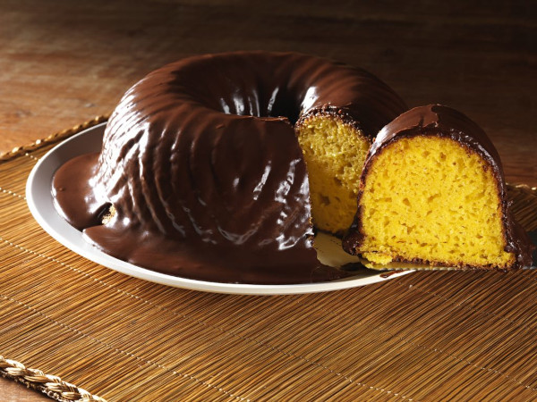
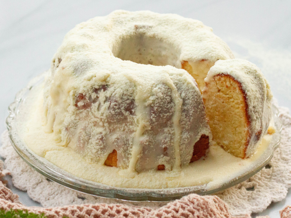
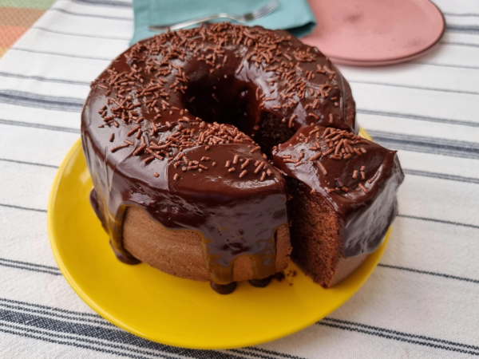
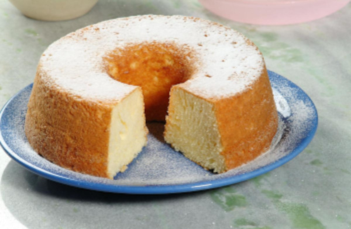

O cheirinho de bolo de cenoura saindo do forno traz alegria para a casa, a sensação de lar. Nessa receita, a massa fica fofinha, cresce que é uma beleza. O sabor equilibrado, doce na medida certa. Na cobertura, uma calda de chocolate cremosa. Já pode passar um cafezinho!

ingredientes da massa
3 cenouras médias (cerca de 360 gramas)
4 ovos
1 xícara de chá de óleo de milho (240 ml)
1 e 1/2 xícara de chá de açúcar (300 gramas)
2 xícaras de chá de Farinha de Trigo Globo (280 gramas)
1 colher de sopa de fermento químico em pó (fermento para bolo) (14 gramas)
1 pitada de sal (1/4 de colher de chá)
Manteiga e farinha de trigo para untar
ingredientes da calda
1 caixa de leite condensado (395 gramas)
1 colher de sopa de manteiga sem sal (14 gramas)
4 colheres de sopa de chocolate em pó (ou 7 colheres de sopa de achocolatado)
1/2 caixinha de creme de leite (100 gramas)
Chocolate granulado para decorar
Uma receita bem simples, bolo de leite em pó sem recheio, com massa macia e uma calda de leite em pó para trazer ainda mais sabor. Um truque para que a massa fique homogênea mais rapidamente é usar água fervente. Aprenda a fazer agora mesmo!

ingredientes da massa
Ovo 3 unidades
Açúcar 3/4 de xícara (135g)
Óleo 1/3 de xícara (80 mL)
Leite 1/2 xícara (120 mL)
Leite Ninho 1/2 xícara (45g)
Farinha de trigo 1 xícara e 1/3 (160g)
Fermento químico 2 colheres de chá (10g)
ingredientes para cobertura
Leite condensado 1 lata (390g)
Leite Ninho 1/3 de xícara (30g)
Creme de leite 1 caixinha (200g)
Nessa receita, ensinamos a preparar um bolo de chocolate mais saudável, sendo a massa feita sem a tradicional farinha de trigo. Além disso, a cobertura do bolo leva cacau 100%, que ajuda a deixar o sabor de chocolate mais concentrado e delicioso.

ingredientes da massa
4 ovos
2 colheres de sopa de óleo de coco sem sabor
1/4 xícara de chá de leite de coco
1 xícara de chá de açúcar mascavo
1 e 1/2 xícara de chá de farinha de amêndoas
3 colheres de sopa de cacau 100%
1 colher de chá de extrato de baunilha
1 colher de sopa de Fermento em Pó Químico Globo
ingredientes para cobertura
1/2 xícara de chá de leite de coco
1 colher de sopa de cacau 100%
2 colheres de sopa de açúcar mascavo
3 quadradinhos de barra de chocolate 70%
Esse bolo de baunilha simples é perfeito para acompanhar o café da manhã e da tarde. Para deixar ainda mais gostoso, molhe a massa com um pouco de leite, assim a massa fica úmida e docinha.

ingredientes da massa
3 ovos (gemas e claras separadas)
1 xícara de chá de leite
1 colher de sopa de essência de baunilha
3 colheres de sopa de manteiga
2 xícaras de chá de farinha de trigo
1 e 1/2 xícara de chá de Açúcar Extra Fino Especial Globo
1 colher de sopa de fermento químico em pó (fermento para bolo)